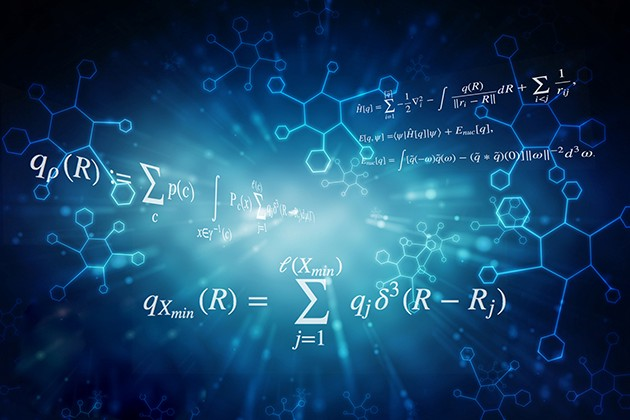

La estadística es una rama de las matemáticas aplicadas que consiste en la recopilación, descripción, análisis e inferencia de conclusiones a partir de datos cuantitativos.
Ver
El análisis de series temporales consiste en analizar una secuencia de datos recogidos durante un intervalo de tiempo
Ver
Es una rama de la inteligencia artificial basada en la idea de que los sistemas pueden aprender de los datos, identificar patrones y tomar decisiones.
VerConsiste en la recopilación de datos sobre personas o empresas y su análisis para comprender sus necesidades.
Ver